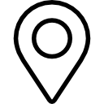

© Copyright 2024 theturfat.com
Casino Hotel Velden
📍Esplanade 4, 9220 Velden am Wörthersee, Österreich
Direkt am Ufer des Wörthersees gelegen, bietet es atemberaubende Ausblicke und eine malerische Umgebung. Velden ist eine beliebte Kurstadt, bekannt für ihren schönen See, kulturelle Veranstaltungen und Luxus-Tourismus.
>mehr lesenSpielmöglichkeiten: Das Casino bietet eine Vielzahl von Spieloptionen, darunter Spielautomaten, Tischspiele wie Roulette, Blackjack und Poker.
Atmosphäre: Bietet ein stilvolles und raffiniertes Umfeld, das moderne Eleganz mit dem Charme des Seeufers kombiniert.
Veranstaltungen: Veranstaltet regelmäßig Spielturniere, Themenabende und Unterhaltungsaktivitäten.
Gastronomie: Vor Ort gibt es gastronomische Optionen, darunter ein Restaurant mit einer vielfältigen Auswahl an lokalen und internationalen Gerichten sowie eine Bar/Lounge für Getränke und leichte Snacks.
Zimmer: Das Hotel bietet eine Auswahl an Zimmern und Suiten, die typischerweise moderne Annehmlichkeiten, elegante Möbel und Ausblicke auf den Wörthersee oder die Umgebung bieten.
Ausstattung: Die Zimmer sind ausgestattet mit Highspeed-Internet, Flachbildfernsehern, Minibars und Zimmersafes. Premium-Zimmer und Suiten können zusätzliche Features wie Balkone und gehobene Annehmlichkeiten bieten.
Dienstleistungen: Beinhaltet Zimmerservice, Concierge-Service und tägliche Zimmerreinigung.
Gastronomie: Das Hotel verfügt über ein gehobenes Restaurant und eine Bar/Lounge mit einer Auswahl an Gerichten und Getränken.
Wellness: Einige Einrichtungen in der Umgebung bieten Wellnessoptionen wie Spas, Saunen und Fitnesszentren. Die Einzelheiten hängen vom genauen Hotelstandort innerhalb der Casino Hotel Velden-Gruppe ab.
Veranstaltungen und Tagungen: Das Hotel bietet Einrichtungen für die Durchführung von Veranstaltungen, Tagungen und Konferenzen, die sowohl Freizeit- als auch Geschäftsreisende ansprechen.
Atmosphäre: Kombiniert Luxus mit dem Nervenkitzel des Casino-Spiels und liegt in einer ruhigen Seelage mit wunderschönen Ausblicken.
Erreichbarkeit: Bequem erreichbar von großen Städten in Österreich und benachbarten Ländern. Velden ist gut mit dem Auto und öffentlichen Verkehrsmitteln verbunden.
Lokale Attraktionen: Gäste können lokale Sehenswürdigkeiten wie Bootstouren auf dem Wörthersee, Wanderwege und kulturelle Sehenswürdigkeiten in Velden und der Umgebung erkunden.
Gästefeedback: Im Allgemeinen positive Bewertungen heben die hochwertige Unterkunft, den ausgezeichneten Service und die schöne Lage hervor. Gäste schätzen die Kombination von Freizeit und Luxus, die das Casino und Hotel bieten.
BewertungenDas Haus erhält oft hohe Bewertungen für seine Lage, Ausstattung und das gesamte Erlebnis.
Insgesamt ist das Casino Hotel Velden ein angesehenes Ziel für diejenigen, die sowohl Spielspaß als auch luxuriöse Unterkünfte in einer malerischen Seelage suchen. Für aktuelle Informationen zu Verfügbarkeit und Einzelheiten ist es ratsam, direkt beim Hotel nachzufragen.
Österreichische Casinos, die von Casino Austria verwaltet werden, arbeiten normalerweise unabhängig von Hotels. Sie arbeiten oft mit nahegelegenen Hotels zusammen, anstatt Unterkünfte vor Ort zu haben. Dieser Ansatz ermöglicht es den Casinos, sich auf ein kultiviertes, elegantes Spielerlebnis zu konzentrieren, das oft an historischen oder malerischen Orten stattfindet, während Partnerhotels separate Unterkünfte und zusätzliche Annehmlichkeiten bieten.
Im Gegensatz dazu verfügen amerikanische Casino-Resorts normalerweise über integrierte Casino-Etagen innerhalb großer Resortkomplexe. Diese Resorts kombinieren umfangreiche Spieloptionen mit luxuriösen Unterkünften, Unterhaltung, Essen und Freizeitaktivitäten unter einem Dach und bieten so ein umfassendes All-in-One-Erlebnis.
 Parkstraße 1, 2500 Baden bei Wien, Österreich
In der Nähe des Kurparks und des Stadtzentrums gelegen, bietet dieses Hotel komfortable Zimmer mit modernen Annehmlichkeiten. Es verfügt über ein Restaurant, eine Wellness-Oase und einfachen Zugang zu lokalen Attraktionen.
Das Park Hotel Baden ist bequem in der Nähe des Casino Baden gelegen, das nur einen kurzen Spaziergang entfernt ist. Gäste können problemlos die vielfältigen Spielmöglichkeiten und Unterhaltung des Casinos genießen, während sie einen komfortablen Ausgangspunkt für die Erkundung der Stadt und des Casinos haben.
Besuchen Sie mehrStelzenstraße 1, 6900 Bregenz, Österreich
Am Bodensee gelegen, bietet das Grand Hotel Bregenz luxuriöse Unterkünfte mit Seeblick. Es umfasst ein gehobenes Restaurant, ein Wellness-Center und Konferenzeinrichtungen.
Die erstklassige Lage des Hotels in der Nähe des Casino Bregenz ermöglicht es den Gästen, nur eine kurze Strecke entfernt erstklassige Spiel- und Unterhaltungsmöglichkeiten zu genießen. Das Casino ergänzt das luxuriöse Erlebnis des Hotels mit seinen vielfältigen Angeboten und der malerischen Umgebung.
Besuchen Sie mehrParkstraße 1, 2500 Baden bei Wien, Österreich
In der Nähe des Kurparks und des Stadtzentrums gelegen, bietet dieses Hotel komfortable Zimmer mit modernen Annehmlichkeiten. Es verfügt über ein Restaurant, eine Wellness-Oase und einfachen Zugang zu lokalen Attraktionen.
Das Park Hotel Baden ist bequem in der Nähe des Casino Baden gelegen, das nur einen kurzen Spaziergang entfernt ist. Gäste können problemlos die vielfältigen Spielmöglichkeiten und Unterhaltung des Casinos genießen, während sie einen komfortablen Ausgangspunkt für die Erkundung der Stadt und des Casinos haben.
>Besuchen Sie mehrParkstraße 1, 2500 Baden bei Wien, Österreich
In der Nähe des Kurparks und des Stadtzentrums gelegen, bietet dieses Hotel komfortable Zimmer mit modernen Annehmlichkeiten. Es verfügt über ein Restaurant, eine Wellness-Oase und einfachen Zugang zu lokalen Attraktionen.
Das Park Hotel Baden ist bequem in der Nähe des Casino Baden gelegen, das nur einen kurzen Spaziergang entfernt ist. Gäste können problemlos die vielfältigen Spielmöglichkeiten und Unterhaltung des Casinos genießen, während sie einen komfortablen Ausgangspunkt für die Erkundung der Stadt und des Casinos haben.
>Besuchen Sie mehrParkstraße 1, 2500 Baden bei Wien, Österreich
In der Nähe des Kurparks und des Stadtzentrums gelegen, bietet dieses Hotel komfortable Zimmer mit modernen Annehmlichkeiten. Es verfügt über ein Restaurant, eine Wellness-Oase und einfachen Zugang zu lokalen Attraktionen.
Das Park Hotel Baden ist bequem in der Nähe des Casino Baden gelegen, das nur einen kurzen Spaziergang entfernt ist. Gäste können problemlos die vielfältigen Spielmöglichkeiten und Unterhaltung des Casinos genießen, während sie einen komfortablen Ausgangspunkt für die Erkundung der Stadt und des Casinos haben.
>Besuchen Sie mehrParkstraße 1, 2500 Baden bei Wien, Österreich
In der Nähe des Kurparks und des Stadtzentrums gelegen, bietet dieses Hotel komfortable Zimmer mit modernen Annehmlichkeiten. Es verfügt über ein Restaurant, eine Wellness-Oase und einfachen Zugang zu lokalen Attraktionen.
Das Park Hotel Baden ist bequem in der Nähe des Casino Baden gelegen, das nur einen kurzen Spaziergang entfernt ist. Gäste können problemlos die vielfältigen Spielmöglichkeiten und Unterhaltung des Casinos genießen, während sie einen komfortablen Ausgangspunkt für die Erkundung der Stadt und des Casinos haben.
>Besuchen Sie mehrParkstraße 1, 2500 Baden bei Wien, Österreich
In der Nähe des Kurparks und des Stadtzentrums gelegen, bietet dieses Hotel komfortable Zimmer mit modernen Annehmlichkeiten. Es verfügt über ein Restaurant, eine Wellness-Oase und einfachen Zugang zu lokalen Attraktionen.
Das Park Hotel Baden ist bequem in der Nähe des Casino Baden gelegen, das nur einen kurzen Spaziergang entfernt ist. Gäste können problemlos die vielfältigen Spielmöglichkeiten und Unterhaltung des Casinos genießen, während sie einen komfortablen Ausgangspunkt für die Erkundung der Stadt und des Casinos haben.
>Besuchen Sie mehr© Copyright 2024 theturfat.com